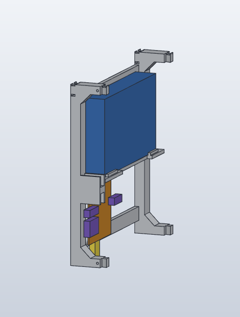
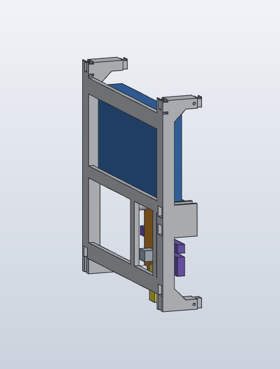
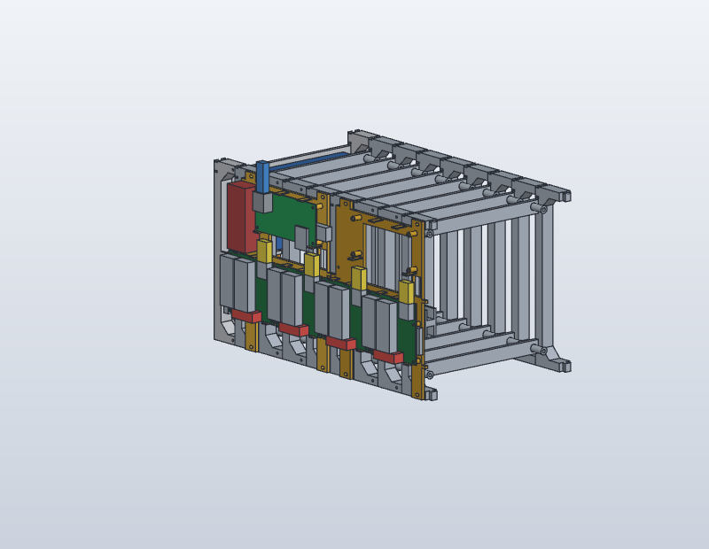
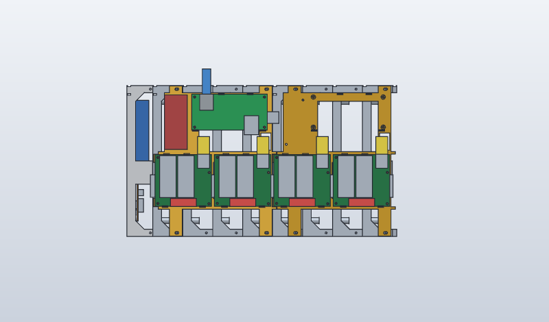
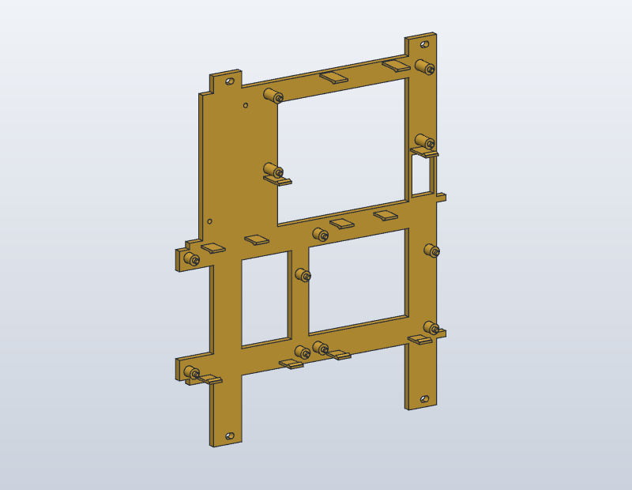
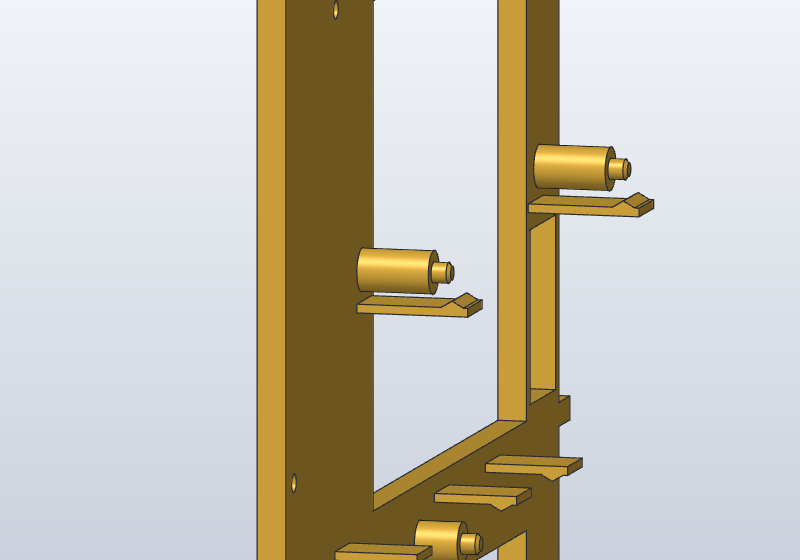
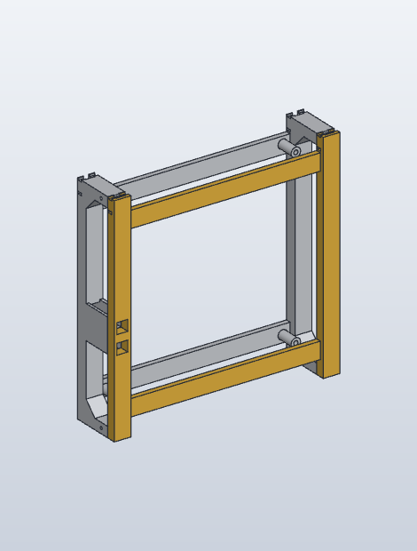
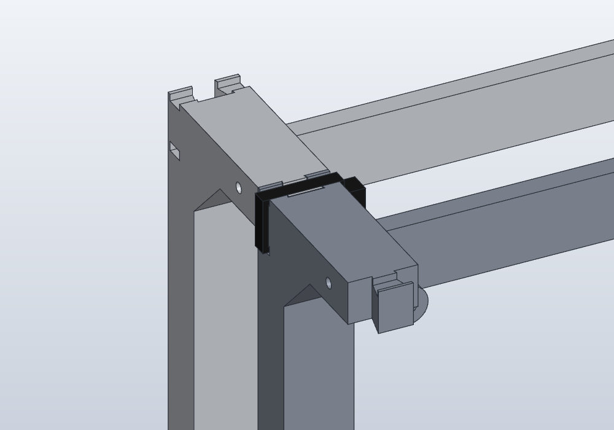
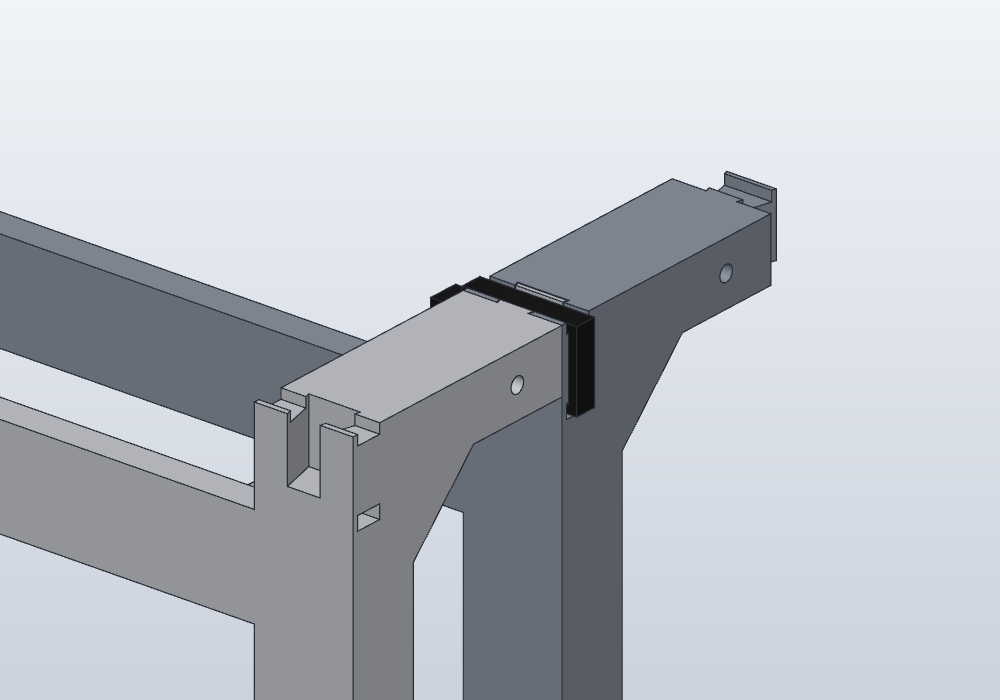

Blocks of 8 frames (8 nodes) with an infra frame on the block end (2.5G switch, controller and plane core), packed into the PRO9 tank (inside 788 x 664.5 mm, liquid up to 422 mm). Updated for the 23 mm cooler (pitch 41.6 mm) and the frame widened to 216 mm (18 mm on each side of the board): a block now lies across one half of the tank instead of front to back. Drawings are to scale and follow the sliders. Nodes are powered and controlled by planes: one core and four units per block, a 48 to 19 V port module per node. Values marked TBD are placeholders.
The frame is 18 mm wider than the board on the left, so the next frame's rail no longer covers the 10-pin power header and a plug can be seated there. Barrel jack and RJ45 sit on the top edge near the left rail (positions from the board STEP). 19 V arrives on a 14 AWG pair from the plane's port module, and the front-panel lines on a 4-wire cable to the motherboard header. Whether the 19 V ends in a barrel plug or in leads soldered to the jack pins is open; a plug adds to the top band.

Same rails, legs, dovetails and bus bar holes as a node frame (216 x 210), but 36 mm deep and without the motherboard standoffs. Shown the way it stands in the tank. The switch stands on a ledge in the upper half with its ports up, 20.5 mm below the top of the frame. The core (68 x 72) is alone under the ledge, on the bus bar side, on four 9 mm standoffs.
The controller is no longer in this frame: it is on the plane carrier (sheet 10).

The core faces the back of the frame, so that its 2x7 chain and 2x3 link plugs point to the bus bar side, where the plane carrier is. Its parts side and the 48 V plug are reached from the open end of the block; the plug goes in from below.
The first print of this frame came out upside down: in the tank the frames stand with the model's height axis pointing down. This version is laid out the tank way up. Open: the switch size (160 x 90 x 25) and its 12 V jack are assumed, and the front lips are only 3 mm.




From the generator scripts (plane_carrier.py, infra_frame.py); the parts on the boards are envelopes measured on the KiCad STEP exports. The carrier is two identical printed halves. Each is held by four self-tapping screws (3 x 12) through slots at the ends of its two struts, into 2.5 mm pilot holes in the legs of the node frames. It prints flat, frame side on the bed, without supports. The plane stands 30.2 mm off the frame face.
The boards need no screws. Each sits on standoffs with a pin through its mounting holes (2.9 mm pins, for 3.2 mm holes) and is held down by four clips on two edges. A clip is a 1.2 mm post with a barb that overlaps the board by 0.6 mm; both barb faces slope at 30 degrees, so they print without supports. The pins take the load along the board, the clips only stop it lifting off. The switch supply keeps two self-tapping screws.
The top strip carries the switch supply (CUI DQD50-48-S12-T, 48 V in, 12 V 4.2 A, isolated) and the controller (105 x 50) on 10 mm pin standoffs, network jack up, so its cable leaves upward with the node cables.
The units are below, the right way up: 48 V plugs at their top edge, node terminals at the bottom edge. Unit 1 is next to the infra frame, so the core's two ribbons to it are about 10 cm. The 48 V leads turn in to the bus bars in the 34 mm between the units and the controller; one strut has an opening for unit 2's lead. The node leads run from the bottom of the plane up to the nodes' DC jacks, about 20 cm.
Tried and dropped: units along the top with their terminals up. It shortens the node leads but reverses the chain, which puts unit 1 at the far end and needs about 45 cm of ribbon for I2C.

Closes a block: a flat frame (end_frame.py) that drops onto the dovetails of the last node frame and covers its legs. It is 9 mm thick, not 12, because a block with it is 377.8 mm against about 379 mm per half of the tank. The wall in front of the dovetail grooves is 2.8 mm.


The dovetails only fail one way: a frame can lift up out of the frame behind it. So a block cannot be picked up by one frame; everything on the end frame's side stays on the table.
A 3.6 mm zip tie on each top joint stops that. It runs over the tenon of the frame in front, down both sides of the leg and through a slot under the groove (4.4 x 2.2 mm, 1.3 mm below the groove floor). A recess 1.6 mm deep across the groove walls and the tenon keeps it flush, so the upper block still stands flat on the legs. The head goes on the inside of the leg. Two ties per joint, nine joints: 18 per block. The bottom joints need none.
The slot and recess are in the node, infra and end frames. Not printed yet: check the 1.3 mm floor between groove and slot on a test print, and lift a tied block of loaded frames before trusting it over the tank.
One block is the unit: 8 nodes, one plane, one switch, one controller. Core, units and port modules join board to board; everything drawn as a line here is a cable. The harness drawings with pinouts are in the repo under cabling/, the schedule in docs/block-cabling.md.
Three ground domains stay apart: the 48 V bus with the nodes (earthed once, at the busbar), the link with the controller (isolated at the core), and the switch supply output (floating). The front-panel cable has no ground wire; a press returns through the 19 V cable.
The switch has 8 copper ports and a block has 8 nodes, so the controller cannot use its own block's switch: it goes to a management switch outside. Node ports never carry VLAN 1, the switch's management VLAN; only the uplink does.
What to look at when the parts arrive, in the order that settles the most. Dates are 2026.
Units on the printed carrier: the chain connectors on the back (5.2 mm in the board model) pass 0.8 mm over the rib between unit 1 and 2 and over the end strut of each half, on 6 mm standoffs. Check that they clear, and measure the mated pair above the back of the board. If they touch: a 2 mm relief in the rib and strut, not higher standoffs.
Controller link plug (9.0 mm) has 1.0 mm over the ladder. Pins: 2.9 mm into the board holes. Clips: whether they snap over the board edge without breaking.
Front panel cable: the unit has 4 pins (JST GH: 1 PWR_SW, 2 RST_SW, 3 PLED+, 4 PLED-), not the 5 of controller rev C. There is no ground wire; a press returns through the 19 V cable. With a meter on the AXB35 header, before making eight cables: which pin of each button is ground (wire the other one), and the polarity and voltage of the power LED pins.
To order for that cable: JST GH series, 1.25 mm pitch, 4 positions, latching. Housing GHR-04V-S, contacts SSHL-002T-P0.2 (26 to 30 AWG); shops list it as "JST GH 1.25 mm 4-pin". Pre-crimped, single-ended leads of 30 cm or more save the crimp tool. Not PicoBlade (1.25 mm, no latch), SH (1.0 mm) or PH (2.0 mm). 8 per block: 96 for 12 blocks, 128 for 16, plus spares. The header on the unit is SM04B-GHS-TB; the motherboard end is plain 2.54 mm.
Controller on the carrier: on 10 mm pin standoffs with clips (check the board's hole size, drawn for 3.2 mm, and that its edges are free where the clips sit), and 2.5 mm between unit 2's 48 V plug and the controller's ESP32 module.
Link ribbon from the controller around the block corner to the core: estimated 30 to 35 cm.
Core in the infra frame: on its four standoffs, parts side to the back, both ribbon plugs for unit 1 reaching the carrier side.
Power-up: first-batch units should switch on at about 41.3 V and off at about 38.3 V. Watch for a false power-good trip when a slot starts.
Pad height: it must stand more than 2.1 mm proud of the base, or the base lands on the board's 3.8 mm posts before the pad touches the chip (1.7 mm high). A copper shim is the way out.
Screws: whether they thread into the board's posts (75 x 75 mm), and whether their length suits.
Stick-out: mounted, the cooler should stand about 5 mm proud of the rail back. It then has 3.5 mm to the tallest part behind the next board.
The switch's real size (assumed 160 x 90 x 25): it decides the 0.3 mm between the first node's K129 and the switch.
The tank's inside depth (664.5 mm from the spec sheet) and the length of a half beside the centre bar (379 mm): neither is measured. The depth decides whether supplies fit two side by side, the half whether a block goes in with 1.2 mm to spare.
The front panel header: I cleared four header-like parts along the board edge, without knowing which one it is.
The 2.8 mm wall in front of the end frame's dovetail grooves.
CB3000, 287 x 185 x 70 (203 over the mounting tabs). The maker says it may be immersed: get that in writing for ThermaSafe R (PAO), and ask whether the fan comes off. Clean them first, then run one unit at full load for 24 to 48 h before the others.
Short one supply through a 10 A fuse at a 30 A limit. If the current holds, the block fuses work. If it pulses (hiccup), a short anywhere drops the whole pod and each block needs an electronic breaker instead.
The CB3000 has no ORing and no share pin. One ideal-diode stage per supply (80 A, 60 V), and the currents are balanced over Modbus by trimming setpoints; without that the supplies cascade on their 58 A limits, which is only safe if they hold a constant current there (the overload test).
The block controllers have no RS485 port. A Modbus TCP to RTU gateway on the management switch, outside the tank, makes the six supplies reachable over the network. To buy. The balancing software is not written: for the first pod a script that sets every supply to 48.0 V and logs the currents. Check whether the CB3000 keeps its setpoint and limit through a power cycle.
Nodes idle at about 20 W, so six supplies then run at 6 to 8% each, where their fixed loss dominates. Measure the mains draw of one CB3000 with nothing connected: around 15 W is not worth acting on, 50 W would make switching supplies off at idle worth doing later.
9 to 13 A through the DC-045D jack: a barrel plug rated for it, or leads soldered to the jack pins. Also the motherboard's front-panel pinout, which fixes the node end of that cable.
One mains feed per supply (3G2.5), the RS485 pair and the network cables pass the tank wall; the 48 V stays inside. Check every cable's insulation against PAO: silicone, PTFE or XLPE are safe choices. The gland or pass-through is open.
Second version (sheets 8 and 9), laid out the tank way up after the first print came out upside down: switch and core only, 216 mm wide, with a pocket in the ledge for the first node's cooler; not printed yet. Switch size and its 12 V jack are assumed, not measured. The switch is held at the front by two 3 mm lips only.
The switch needs 12 V, isolated from the bus. A bought converter replaces the proposed board: CUI DQD50-48-S12-T, one per block, on the plane carrier (sheet 10). Ordered. Whether the switch sits in the fluid is open.
The pitch is 41.6 mm, which holds a cooler of 23 mm flush with the rail back. A taller one can stand proud into the free space behind the next board: the K129 (28.2 mm above the board) does so by 5.2 mm and leaves 3.5 mm. A block with its 36 mm infra frame and the 9 mm end frame is 377.8 mm, about 1 mm less than a half of the tank. Front to back, two blocks per string would need 36 mm or less.
216 mm: the board is 180 and both rails stand 18 mm clear of it, so the 10-pin power plug on one side and the front panel headers on the other can be reached. With the plane on its side (30 mm) a row is 246 mm: two rows use 492 of the 664.5 mm depth, which leaves 172 mm. Two supplies side by side in that strip (2 x 70, covers off) leave 32 mm: 6 mm at each wall and between the rows, 8 mm between the supplies. That is tight, and the 664.5 mm is from the spec sheet, not measured. Front to back, two strings per half need a frame of 189.5 mm or less.
Zip ties on the top dovetails (sheet 12), 18 per block, 3.6 mm. Frames printed before 21 Nov have no slot; they cannot be tied. Lift test with loaded frames still to do. Cutting the ties is the price of swapping a node.
Drawn, not printed: a ladder in two halves, screwed to the legs of the node frames on the bus bar side with four self-tapping screws each; boards on pin standoffs with 30 degree clips, no screws. Switch supply and controller along the top, units below with unit 1 next to the infra frame (sheet 10). The plane stands 30.2 mm off the frame. The clips are untested: they stand upright in the print, so they bend across the layers. Print one half and click a board in and out a few times before the batch. Node frames printed before 21 Nov have no pilot holes; drill 2.5 mm at 32.7 mm from the frame's back, in the middle of each leg.
The dovetails join frame to frame along a block only. A second layer needs tenons on the bottom arms, or a shelf.
Lower-layer RJ45 and 48 V feeds must pass the upper layer. The rows stand 6 mm apart, and the strip behind them (about 148 mm with the 216 mm frame) holds the supplies two deep with 8 mm between them; beside the centre bar only about 7 mm is left per half.
Solved by splitting the plane. In one piece it is 398 mm (core 68 + 4 units of 78.5 + joints), longer than a block's slot. Now the core sits in the infra frame under the switch, on two ribbons (2x7 chain, 2x3 link) to unit 1, and the controller is on the carrier's top strip. The four units alone are 326 mm and hang along the 8 frames (332.8 mm), a unit with its joint (82.5) over every two frames (83.2). To check on the bench: the two core ribbons of about 10 cm and the controller's link ribbon of 30 to 35 cm.
8 nodes fill the switch's 8 copper ports, so the controllers need a management switch of their own (or a block gives up a node). A standby ring needs a second, isolated CAN port on the controller.
Drawn about 30 mm wide from the spec sheet drawing. Measure it, and how far down it reaches: a block of 377.8 mm with its end frame relies on about 379 mm per half, so 1 mm decides whether a block goes in.
To design and print: the two 48 V bars (Cu 15 x 15 x 350, tapped for the supply and block lugs) sit at the centre bar in a holder that keeps them apart and covered, so no frame, lug or dropped tool can touch them. It needs the bar's real width, height, material and how far below the liquid its top is; with 1.2 mm of slack per half the holder cannot reach down beside the blocks. Infra frames face the bar, so every block's feed and uplink start there. Open: whether the bars lie along the centre bar or stand upright. With the right half turned, the block bars end at four places 423 mm apart in depth, more than 350; the two layers' block bars are 212 mm apart in height.